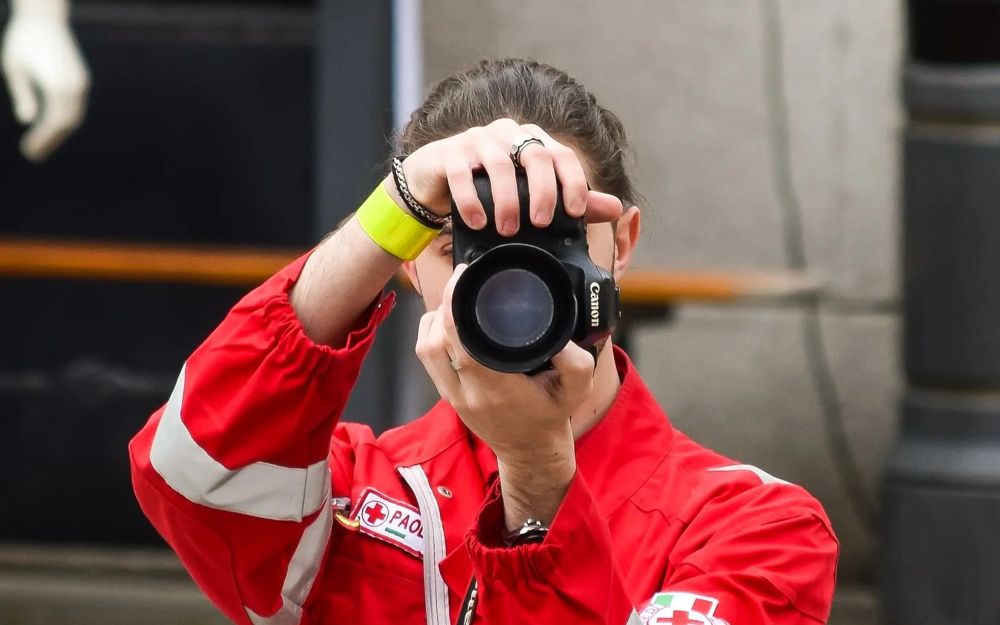
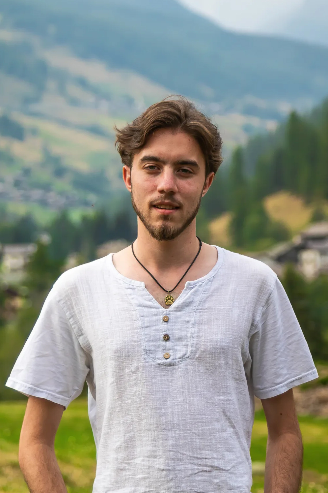

2021
Il primo incarico
Nel 2021 mi hanno ingaggiato per fotografare un raduno di auto locale. Lì ho capito che volevo fare della fotografia il mio lavoro.

Fotografo · Acqui Terme
Fotografo di concerti, serate, sport, matrimoni e ritratti.


Sono Paolo Giangregorio, fotografo con base ad Acqui Terme. Mi piace raccontare quello che succede sul palco, a bordo campo e nei momenti che passano inosservati.
Fuori dalla fotografia suono, faccio volontariato in Croce Rossa e insegno tiro con l’arco.
Nel 2018 mio padre mi mise in mano la sua vecchia Canon 20D e mi disse «Vai e crea». Da lì è iniziata la mia passione per la fotografia.
2021
Nel 2021 mi hanno ingaggiato per fotografare un raduno di auto locale. Lì ho capito che volevo fare della fotografia il mio lavoro.
2024
Come assistente in uno studio fotografico ho imparato a lavorare con la luce naturale e artificiale.
Oggi
Oggi lavoro con CDMovie A.P.S. e altre realtà locali, raccontando eventi ad Acqui Terme e dintorni.
Negli anni 2024, 2025 e 2026 alcuni miei scatti sono stati premiati al concorso fotografico internazionale organizzato dall'associazione ArchiCultura A.P.S. per la sezione Under-20.
Questi riconoscimenti sono stati un grande stimolo per continuare a migliorare e a crescere come fotografo, spingendomi a esplorare nuove tecniche e stili.
Vedi le foto premiate2024
Nel 2024 ho partecipato per la prima volta al concorso fotografico internazionale organizzato dall'associazione ArchiCultura A.P.S. e ad una mia foto è stata assegnata una menzione d'onore nella sezione Under-20.
2025
Nel 2025 ho partecipato nuovamente al concorso fotografico internazionale organizzato dall'associazione ArchiCultura A.P.S., dove ho ricevuto il primo premio nella sezione Under-20.
2026
Nel 2026 ho partecipato per l'ultima volta al concorso fotografico internazionale organizzato dall'associazione ArchiCultura A.P.S., ricevendo nuovamente il primo premio nella sezione Under-20 con una foto ed una menzione d'onore con un'altra.
Contatti